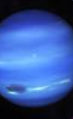

NETUNO
Netuno é o planeta misterioso do sistema solar, com uma cor azul profunda e vibrante que parece um oceano espacial. Esse gigante gelado é conhecido por seus ventos superrápidos, que podem alcançar até 2.100 km/h, mais rápido do que qualquer furacão na Terra! Além disso, Netuno tem uma atmosfera cheia de mistérios, com tempestades intensas e um sistema de anéis discretos. É um planeta que parece esconder muitos segredos e aventuras!
Netuno é o planeta mais distante do Sol e um verdadeiro enigma do espaço. Sua cor azul impressionante vem do metano na atmosfera, que reflete a luz do Sol de maneira única. O mais emocionante é que Netuno possui ventos gigantescos que podem atingir incríveis 2.100 km/h – isso é mais rápido do que qualquer furacão na Terra! E, apesar de sua distância, Netuno tem um sistema de anéis discretos e várias luas interessantes. É um planeta que parece ter um pouco de tudo para os exploradores espaciais!
Material de Estudo